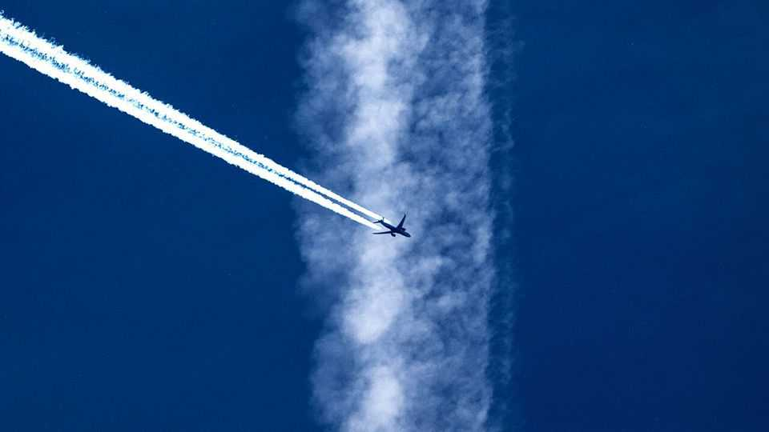
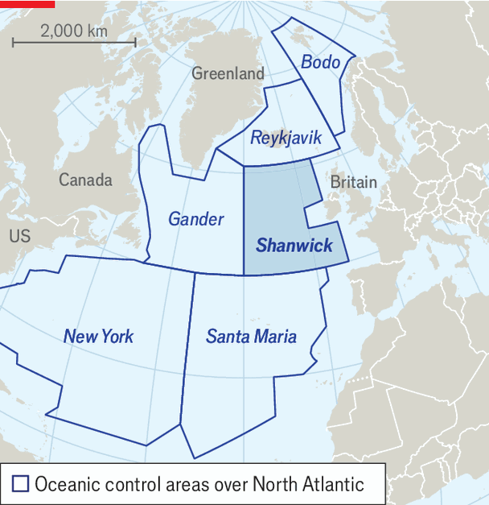
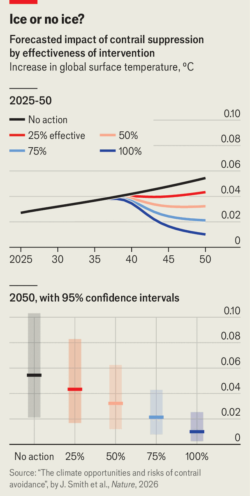

Contrail-free flying could help the climate
A trial over the Atlantic aims to show how

Aug 20th 2026
The 40m scheduled passenger flights which took place in 2019 added up to about 61bn kilometres of travel—exceeding the distance from Earth to the Sun every day of the year. More than 40% of those flights left contrails behind them for at least some of the journey as water vapour in the exhaust from their engines froze into tiny particles of ice.
Many of these trails were ephemeral. They streamed out behind their progenitor planes before fading quickly away. But over about 5% of the total distance flown—comfortably enough for ten round-trips a day to the Moon—they persisted and widened as water vapour already in the atmosphere joined in the freezing. Thin white lines became broad translucent stripes of cirrus cloud. Wind those stripes around Earth like yarn around a ball and you will find that, at any one time, persistent contrails cover maybe a thousandth of the sky. In doing so they warm the planet.
Contrails are white because their constituent ice crystals reflect sunlight. That can have a cooling effect during daytime. But the crystals also absorb infrared radiation and re-emit it, rather as greenhouse gases do. Some is thus radiated into space, but the rest travels back towards Earth. This produces 24-hour warming that, overall, handily outweighs the cooling (something which is true for non-contrail cirrus, too). The exact amount of net warming is hard to calculate, but current evidence suggests aircrafts’ contrails and the cirrus clouds they induce may do more to raise the planet’s temperature than carbon dioxide emitted by the aircrafts’ engines.
This warming is, though, to some extent, optional. For contrails to persist the air they are in must be well below freezing point and yet contain a significant amount of not-yet-frozen water vapour. The thing which stops this water vapour freezing is a lack of particles that might “seed” the process by acting as nuclei around which crystals can form. A contrail provides such seeds by the trillion, and so creates cloud where there was none.
Such ice-supersaturated regions (ISSRs) tend to be found at altitudes of 8-13km. They are a few hundred kilometres across, but only a few hundred metres deep. Keep aircraft out of them and you should get rid of a lot of persistent contrails—which means getting rid of some warming, too.
On August 18th a consortium based in Britain announced Operation Blue Skies, the most important trial of this approach to cooling the climate so far undertaken. It will take place in Shanwick, a piece of airspace that covers 1.8m square kilometres of the North Atlantic west of the British Isles (see map).

There have been smaller trials of the idea. One was run by Germany’s aerospace agency in 2021 and another, in 2025, by American Airlines and Contrails.org, a not-for-profit research organisation largely funded by Breakthrough Energy, a network of investors founded by Bill Gates. The results were promising. Blue Skies, which is considerably bigger, should show whether ways to predict and route around ISSRs are both effective and suitable for operational use.
Shanwick is a bit of airspace well suited to such a project. It is prone to the right sort of damp chilliness at airliners’ cruising altitudes, and it is used by a lot of planes. In combination, those factors mean that, although it covers just 0.4% of Earth’s surface, models suggest Shanwick is responsible for about 5% of contrail-associated warming. What is more, European and American weather satellites monitor the area day and night in both visible-light frequencies and infrared, making it easy to see what is going on.
The plan is that on between 20 and 40 days over the coming winter and again the one after that air-traffic controllers at NATS, the company which looks after British airspace, will alter the flight paths of aircraft passing through Shanwick to keep them out of suspected ISSRs. These changes will route the planes a few hundred metres below their filed flight plans when conditions suggest it and when there is no reason not to (such as turbulence).
Comparing contrails made during periods when these changes are happening and periods when they are not should provide reliable data on how much the contrails are being reduced. “The perfect outcome”, says Sebastian Eastham, part of the team working on Blue Skies at Imperial College, London, “is that a satellite image robustly and reliably has fewer contrails in it, time after time after time.”
As well as NATS and Imperial, the consortium behind Blue Skies consists of Contrails.org, Google (which, as well as its software expertise, is chipping £1.4m, or $1.9m, of hardware and computing time into the £5m budget), the University of Cambridge and Britain’s Met Office.
If contrail avoidance is to go mainstream, the Blue Skies trial needs to show not just that days with avoidance measures in place have fewer contrails, but also that integrating the process into normal operations can be done safely and straightforwardly. That would open the way to more widespread, and eventually everyday use.

Adoption does not have to be universal to be useful. The warming attributed to contrails is concentrated. By one estimate 80% of the temperature-raising effect on the climate comes from just 2% of flights. Awkwardly, you cannot know in advance exactly which 2% they are. But Marc Shapiro, who runs Contrails.org, says that a system eliminating 70% of the world’s contrail warming might require changing the flight plans of fewer than 5% of flights.
According to a recent paper by Jessie Smith of Cambridge and colleagues elsewhere, if aviation does not change its ways it will be responsible for about 0.01°C of total warming above preindustrial levels in 2050. If the world is seeing about 2°C of warming by then, that contribution comes in at 5%, with more than half of it induced by contrails. A 75%-effective contrail-avoidance programme that began in 2035 would reduce the total by about a third, though there is a lot of uncertainty.
Fractions of fractions sound small, but Dr Smith and her colleagues argue that the effect is similar in size to that of any other single measure proposed to reduce warming as a result of air transport—and could be realised faster.
The benefits are not free. Flying at lower altitudes increases the amount of fuel used, which is a cost to airlines, and the amount of carbon dioxide emitted, which is a cost to the planet. But neither cost is huge. Estimates from models suggest that avoiding ISSRs makes flights only slightly longer and increases the amount of fuel used by less than 2%.
Using 2% more fuel on 5% of flights would increase the industry’s total fuel bill by a thousandth. In the American Airlines trial the difference in fuel use between the flights that were diverted and those which were not was undetectable.
Similar calculations hold for warming. According to Olivier Boucher, a climate scientist who has worked on the matter for 30 years and now runs Klima, a small French company dedicated to it, “If you really focus on the most impactful flights, maybe you can save like 100 tonnes of carbon-dioxide equivalent for an extra tonne of carbon dioxide.”
There are also opportunity costs. Some worry that focusing on contrails will distract attention from airlines’ carbon-dioxide emissions and efforts either to reduce them (by using sustainable aviation fuels, or SAFs) or offset them (by removing CO2 from the atmosphere and putting it into permanent storage). Eliminating contrails without attacking these points—or reducing the amount of flying—provides a one-off gain but does not change the fundamental fact that, in the long term, more flying means more warming.
Doubters argue as well that SAFs can be designed to produce fewer particles around which ice can form, thus reducing contrails as well as carbon dioxide. This is true. But steering clear of ISSRs looks like a far more cost-effective approach to contrail reduction. The paper by Dr Smith and her colleagues found that adding SAFs to a system which already practised avoidance resulted in at most 0.001°C of cooling.
There is, then, no free lunch. But the idea that giving passengers a minute or two longer to savour the in-flight cuisine that they have paid for on a few of the world’s many many flights might result in some good is about as appealing as climate interventions get. ■